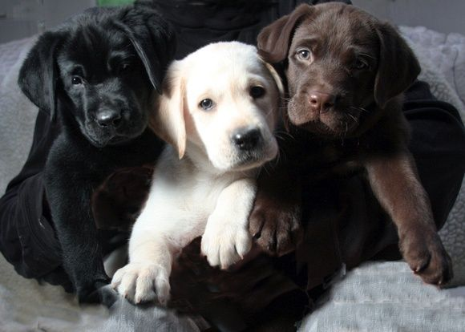
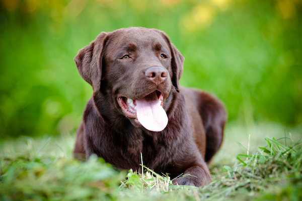
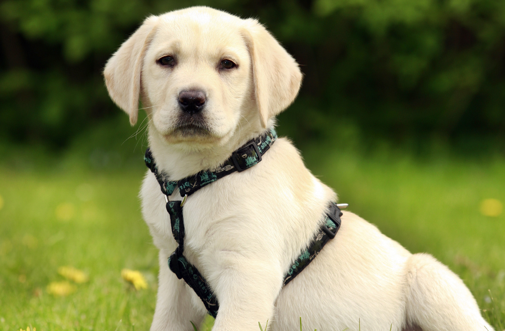

History
The original Labradors were all-purpose water dogs originating in Newfoundland, not Labrador. Not only did the breed not originate in Labrador, but it also was not originally called the Labrador Retriever. The Newfoundland of the early 1800s came in different sizes, one of which was the “Lesser” or “St. John’s” Newfoundland—the earliest incarnation of the Labrador. These dogs—medium-sized black dogs with close hair—not only retrieved game but also retrieved fish, pulled small fishing boats through icy water, and helped the fisherman in any task involving swimming. Eventually the breed died out in Newfoundland in large part because of a heavy dog tax. However, a core of Labradors had been taken to England in the early 1800s, and it is from these dogs, along with crosses to other retrievers, that the breed continued. It was also in England that the breed earned its reputation as an extraordinary retriever of upland game. Initially black labs were favored over yellow or chocolate colors. By the early 1900s, the other colors had become more accepted. The breed was recognized by the English Kennel Club in 1903 and by the AKC in 1917. The popularity of this breed has grown steadily until the Labrador Retriever became the most popular breed in America in 1991 and remains so today.
Temperament
Few breeds so richly deserve their popularity as does the Labrador Retriever. When trained, the breed is obedient and amiable, and tolerates the antics of children, other dogs, and other pets. The Lab is a calm house dog, playful yard dog, and intense field dog, all on the same day. Labs are eager to please, enjoyslearning, and excel in obedience. It is a powerful breed that loves to swim and retrieve. Labradors needs daily physical and mental challenges to keep occupied. A bored Lab can get into trouble! The Labrador’s hunting instinct can drive a dog to roam, so training and a safe yard are needed.
Upkeep
Labradors are active and sociable dogs. They need daily exercise, preferably in the form of retrieving and swimming. Owners with swimming pools either must fence them out or be prepared to share the pool with dog. The Lab coat sheds water easily. Weekly brushing is needed to remove dead hair.
Health
- Major concerns: CHD, elbow dysplasia, OCD, obesity, patellar luxation
- Minor concerns: cataract, CPRA, hot spots, retinal dysplasia, hypothyroidism
- Occasionally seen: diabetes, entropion, distichiasis, tricuspid valve dysplasia, centronuclear myopathy, exerciseinduced collapse
- Suggested tests: hip, elbow, eye, exercise-induced collapse (DNA), (centronuclear myopathy), (knee)
- Life span: 10–12 years